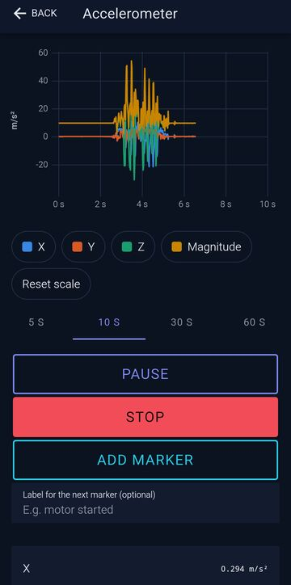

SensorScope
Android Sensor Monitoring & Signal Processing
A native Android application that reads the phone's motion and magnetic sensors in real time, charts them live, records every measurement on the device and analyses it with incremental statistics and an FFT spectrum. It works entirely offline.
Download Android APK
Technical capabilities
Real-time sensor acquisition
Accelerometer, linear acceleration, gyroscope and magnetometer through Android's SensorManager on a dedicated thread, up to the fastest rate the device allows. The effective rate, interval range and jitter are measured from the sensor's own monotonic timestamps.
Batched native bridge and peak-preserving decimation
Samples never cross to the UI one by one: Kotlin groups them into about 15 batches per second and reduces them to min/max pairs per chart pixel, so short spikes stay visible while the chart stays fluid.
Digital signal processing and FFT
Radix-2 FFT written in Kotlin with a Hann window, single-sided amplitude, the three strongest peaks with parabolic interpolation, and resampling when sampling is irregular. Incremental statistics (Welford) and display filters: mean removal, moving average, low-pass and high-pass.
Local data storage
Raw samples are streamed in blocks to a compact binary file per session; metadata, statistics and markers live in SQLite. Sessions cut off by a crash or a reboot are recovered from the file on the next launch.
Analysis workflow
Markers during a measurement, a history of saved sessions, side-by-side comparison of two sessions with percentage changes and overlaid spectra, and CSV export of every original sample through Android's share sheet.
Offline and bilingual
No account, no server and no internet permission. The interface is in Spanish when the phone is set to Spanish and in English for any other language.
Application screenshots
Authentic screenshots of the app. Select one to enlarge it. The last three were taken with the phone set to Spanish.
How to test the application
- Download the Android APK with the button above.
- Open the downloaded file on your Android phone.
- Follow Android's installation prompts. Android may ask you to allow installing apps from the browser or file manager you used; that permission can be turned off again after installing. Keep Google Play Protect enabled.
- Launch SensorScope.
- Try the scenario below.
Requirements: Android 7.0 or later. No additional hardware: the app uses the phone's built-in sensors, and which ones exist and how fast they can be read depends on the phone. The app works entirely offline and needs no account.
Suggested demonstration
- Open Available sensors to see which sensors your phone has and their declared limits.
- Open New measurement, choose the accelerometer and the Fastest rate, and start. Move or shake the phone and watch the live chart and the effective sampling rate.
- Tap Add marker at a moment of interest, then stop the measurement.
- Review the result: duration, real sampling rate, jitter and statistics per channel. Open Spectrum (FFT); resting the phone on a running fan or appliance shows a dominant frequency.
- Open History to reopen the session, compare it with another one or share it as CSV.
Technical architecture
Built with Kotlin, Capacitor 8, React 19, TypeScript, Ionic 9 and uPlot. Signal processing, storage and statistics are plain Kotlin classes covered by JVM unit tests; the interface logic has Vitest tests.
Technical notes
| Application version | 1.0.1 (version code 2) |
|---|---|
| Package | com.sensorscope.app |
| Minimum Android version | Android 7.0 (API 24); targets API 36 |
| APK variant | Single universal APK (no native libraries) |
| APK file size | 4,716,134 bytes |
| SHA-256 (APK) | 24d00021de12a789cdf768bc03158bdf944921ac4462296fc02703fd8880503c |
| Signing certificate SHA-256 | 555bf1e9ec7a5d6a27e531f1447c1ef34e40e0083b48c05dcabf148826627e76 |
| Internet | Not required. The app does not request the internet permission. |
| Additional hardware | None. Uses the phone's built-in sensors. |
| Permissions | HIGH_SAMPLING_RATE_SENSORS, granted automatically, to read sensors above 200 Hz on Android 12 and later. The APK also declares an internal, signature-protected permission added by the AndroidX library, which no other app can use and which is never shown to the user. |
| Limitations | Measurement runs only while the app is on screen. A phone is not a calibrated instrument: values vary between devices and with how the phone is held or mounted, and the app must not be used for safety, medical or diagnostic purposes. Tested mainly on one Android 15 phone. |
The application is provided for technical evaluation, as is. It has not been independently security-audited. Every saved measurement stays on the device.